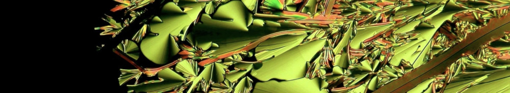

Bilbao Liquid Crystals Group
Members
Current:
- Josu Martínez-Perdiguero
- Aitor Erkoreka
- Josu Ortega
- Ibon Alonso
- Mª Rosario de la Fuente
Past:
- Jesús Etxebarria
- César L. Folcia
- Miguel Ángel Pérez Jubindo
- Nerea Sebastián
- Beatriz Robles-Hernández
Research Lines
- Ferroelectric and Polar Liquid Crystals: Structure, phase behavior, and dynamics of ferroelectric nematic, splay-nematic, and polar smectic phases.
- Dielectric Spectroscopy and Molecular Dynamics: Broadband dielectric spectroscopy to study relaxation processes, collective modes, and molecular motion in liquid crystals and soft matter.
- Electro-Optical and Nonlinear Optical Properties: Electric-field-induced phenomena, second harmonic generation, and nonlinear optical responses in polar and chiral liquid crystals.
- Liquid Crystal Dimers and Bent-Core Systems: Glassy dynamics, phase transitions, and structure-property relationships in nonsymmetric dimers and bent-core materials.
- Soft Functional Materials and Photonic Structures: Liquid-crystal-based photonic crystals, resonant cavities, lasers, and tunable optical devices.
- Quantum Chemistry Calculations.
Experimental Techniques
- Second harmonic generation
- Broadband dielectric spectroscopy
- Spontaneous polarization measurements
- X-ray diffraction
- Dynamic light scattering
- Polarization optical microscopy
Publications
Collaborators
- Nerea Sebastián & Alenka Mertelj, Department of Complex Matter | F7, Jožef Stefan Institute, Ljubljana, Slovenia
- Satoshi Aya & Mingjun Huang, South China Advanced Institute for Soft Matter Science and Technology (AISMST), School of Molecular Science and Engineering, South China University of Technology, Guangzhou, China
- Zi-Yi Du & Rui-Kang Huang, College of Chemistry and Chemical Engineering, Jiangxi Normal University, Nanchang, China
- Alberto Concellón & Teresa Sierra, Liquid Crystals and Polymers Group, Instituto de Nanociencia y Materiales de Aragón INMA, University of Zaragoza-CSIC, Zaragoza, Spain
- Alberto Oleaga, Photothermal Techniques Laboratory, Department of Applied Physics, University of the Basque Country UPV/EHU, Spain
Research Projects/Contracts
Current:
- 2024-2028: Proyectos de Generación del Conocimiento, Project ID2023-150255NB-I00 from MCIU/AEI/10.13039/5011000-11033/FEDER, UE., Ministerio de Ciencia, Innovación y Universidades, Spanish Government
- 2022-2025: Basque Government Grupos Consolidados Project IT1458-22, Basque Government
- 2025-2026: Private Contract on sample monocristallinity assurance via Laue X-ray diffraction
Contact
Department of PhysicsFaculty of Science and Technology
University of the Basque Country (UPV/EHU)
Barrio Sarriena s/n
48940 Leioa (Bizkaia), Spain
Email: jesus.martinez@ehu.eus